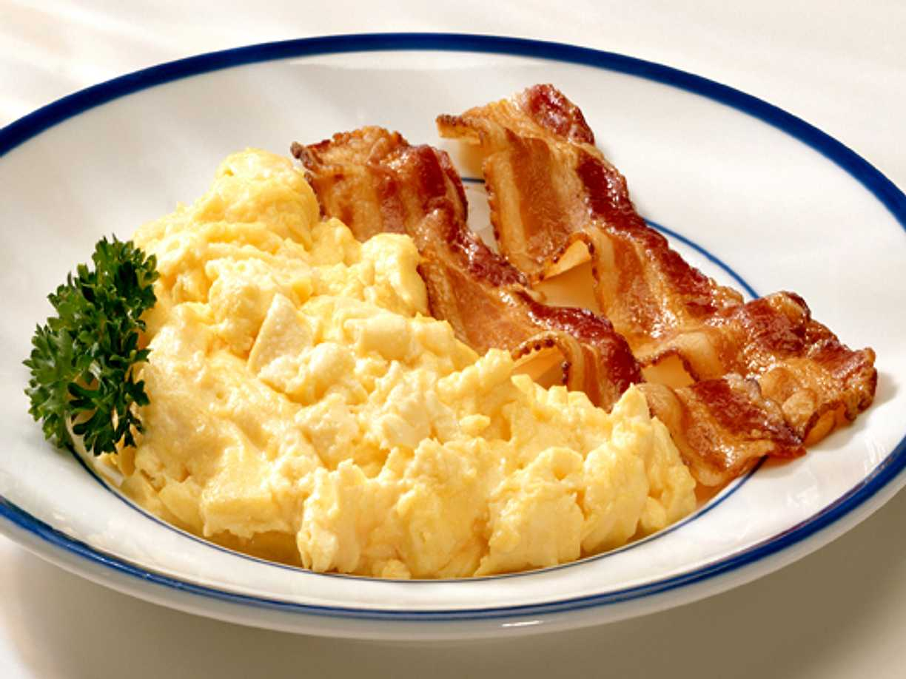

- 2 Ägg
- 1 msk Mjölk / Grädde
- 0.5 paket Bacon
- Salt
- Svartpeppar
Du behöver:
Äggröra med Bacon
(1 portioner)
1. Vispa äggen lätt i en bunke med mjölk/grädde
2. Häll över äggblandningen i stekpannan och rör runt försiktigt så att äggen fortfarande är 'krämiga'
3. Stek bacon tills de blir knapriga
4. Smaka av med lite salt och peppar
Källa: Studentköket: Budget (s. 43)